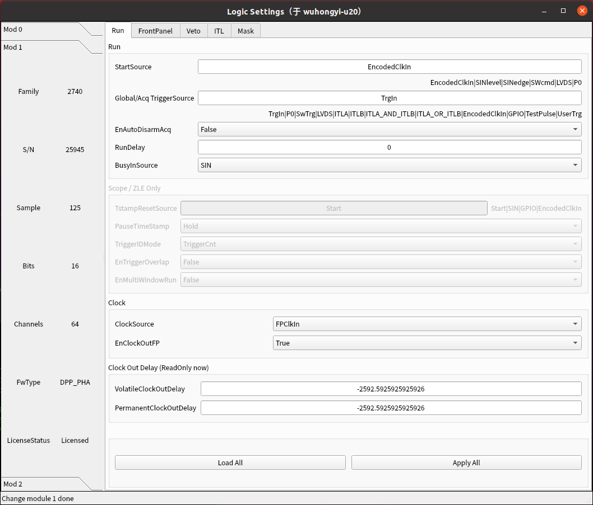

Time synchronization
In a multi module acquisition system, a fundamental requirement is that all modules acquisition data synchronously. It requires all modules to share a clock source and then start and end data acquisition simultaneously.
Clock source setting
CAEN’s clock can be connected in series through the A319 cable on the front panel or shared through the chassis backplane (under development). The following figure shows a typical clock synchronization configuration diagram, where the previous CLK OUT is connected to the next CLK IN through A319.

After connecting the clock synchronization cable, it is necessary to sequentially set the clock source for each module.
For the main module, it is necessary to set ClockSource to Internal and EnClockOutFP to True, as shown in the following figure:

For all slave modules, ClockSource needs to be FPClkIn, and EnClockOutFP needs to be set to True, as shown in the following figure:
The above settings are to output the internal clock of the main module through the front panel, and receive the clock signals transmitted from the previous module through the front panel in sequence from the sub modules.
Synchronous acquisition
For a synchronous system, the main module is usually set to control the start and end of acquisition, and other sub modules also need to make corresponding settings. There are three common ways to control the start and end of the acquisition through the front panel: SYNC-CLKIN、SIN-GPIO、SIN-TRGOUT。 Among them, SYNC-CLKIN is the most widely used because it is included in the clock synchronization line of the front panel, while the other two require the SIN/GPIO/TRGOUT LEMO port on the front panel, commonly used for synchronous acquisition with other acquisition systems.
SYNC-CLKIN
The master module needs to set StartSource to SWcmd and SyncOutMode to Run. Set StartSource to EncodedClkIn and SyncOutMode to SyncIn for all slave modules.
SIN-GPIO
The master module needs to set StartSource to SWcmd and GPIOMode to Run. Set StartSource to SIN level and GPOMode to SIN for all slave modules.
SIN-TRGOUT
Connect the TRGOUT of the master module to the SIN of the first slave module, and so on.
The master module needs to set StartSource to SWcmd and TrgOutMode to Run. Set StartSource to SINlevel and TrgOutMode to Run for all slave modules.
External clock of the system
The default clock frequency of the x27xx module is 62.5 MHz. When the DAQ needs to synchronize with other acquisition systems and the clock input from the external system is not 62.5 MHz, it is necessary to configure the PLL. CAEN provides configuration files for some clock frequencies. If the clock frequency you are using is not available on the CAEN website, please contact CAEN to obtain the corresponding file.
As shown in the figure below, click “Upload new PLL” to upload the required PLL-related files.
As shown in the figure below, select the desired configuration file, click the “apply” button, and then select external input for the clock option. After that, reboot the module to make the PLL effective.